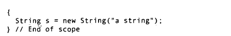

本文是Java编程思想的部分摘录
对象导论
- 封装
- 继承
- 多态
前期绑定：编译器对一个具体函数名字的调用，运行时将这个调用解析到将被执行代码的绝对地址。\
后期绑定（动态绑定）：当向对象发送消息时，被调用的代码直到运行时才能确定。（C++使用virtual关键字来实现，方法默认情况下不是动态绑定的，java中动态绑定是默认行为，不需要添加额外的关键字来实现多态）\
向上转型与向下转型 - 单根继承
所有的类都继承自单一的基类。（除C++外，所有OOP语言）单根继承结果确保所有的对象都具备某些功能。单根继承使垃圾回收器的实现变得容易得多. - 容器
- 对象生命周期
Java采用完全动态内存分配方式。
垃圾回收机制被设计用来处理内存释放问题。垃圾回收器“知道”对象何时不再被使用，并自动释放对象占用的内存。（单根继承自Object以及只能以一种方式创建对象（堆）上2个特性结合） - 异常处理
异常提供了一种从错误状态进行可靠恢复的途径。\
Java内置了异常处理，而且强制必须使用它。没有编写正确的处理异常代码，就会得到一条编译时的出差消息。 - 并发编程
多线程：线程只是一种为单一处理器分配执行时间的手段。Java的并发是内置于语言中的，Java SE5已经增添了大量额外的库支持。 Java与Internet
- CS技术
信息存储与处理技术为服务端，信息显示人工操作为客户端
问题：客户端编号序号重新编译、调试、安装为处理大数据量的客户请求，分发信息，负载均衡 每个不同场合都需要单独的解决方案 - Web技术
Web就是一台巨型服务器，因为所有的服务器与客户端都共存于一个网络中。Web有这样的概念，一些信息不经修改就可以在任意型号的计算机上显示。 - 客户端编程
- 插件
- 脚本语言
通过使用脚本语言，你可以将客户端程序的源代码直接嵌入到HTML页面中，解释这种语言的插件在HTML页面被显示时自动激活。
在Web浏览器内部使用的脚本语言实际上总是被用来解决特定类型的问题。 - Java
能够优雅处理如并发、数据库访问、网络编程和分布式计算。Java通过applet以及使用Java Wet Start来进行客户端编程的。 - .Net及C#
- 服务端编程
Java编写servlet来实现服务器编程。servlet及衍生物JSP，都是应用于服务器编程。
- CS技术
一切都是对象
用引用操纵对象
必须由你创建所有对象
对象存储（内存管理）
- 寄存器: Java不用
- 栈: 虽然某些Java数据存储于栈上，特别是对象引用，但Java对象并不存在其上。
- 堆: 用于存储所有Java对象，与C++ New的对象相同。
- 常量存储
- 非RAM存储:流对象与持久化
特例:基本类型
- 与C++一样，基本类型不是用引用new在堆上，而是放在栈里。
- 所有基本类型占存储空间的大小在所有机器上相同。
BigInteger:支持任意精度的整数
BigDecimal:支持任意精度的定点数
Java中的数组
Java确保数组会被初始化，而且不能在它的范围之外被访问。
当创建一个数组对象时，实际上创建了一个引用数组，并将每个引用初始化为null(这可不是C++的引用，更像是指针)
还可以创建数组存放基本类型，将这种数组所占内存全部置为0.
永远不要销毁对象
- 作用域
Java与C/C++的区别：在C/C++里将一个较大作用域的变量隐藏起来，在Java中不允许。 - 对象的作用域
C++中，new不用后需要自己销毁，而Java中用一个垃圾回收器，用来监视用new创建的所有对象。只要创建的对象不再使用，垃圾回收器就会释放他们。以消除内存泄漏。

创建新的类型:类
- 若某个类的成员是基本类型，即使没有初始化，Java也会确保它获得一个默认值。
,
非类变量则不会。类变量分配在堆上，而非类变量是在栈上分配。局部基本类型必须初始化，否则会返回编译错误。
方法、参数和返回值
- 函数的调用被通常被称为，发送消息给对象。int x = a.f();中消息是f()，对象是a。
- 参数列表与C++相同，类都是通过引用(指针)的方式来传递，而基本类型不是。
构建第一个Java程序
- 名字可见性：为避免名字冲突，C++采用名字空间的概念。java使用全新的方法，为给一个类库生成不会与其他名字混淆的名字，Java设计者希望程序员 反过来使用自己的Internet域名 如域名MindView.net下，应用工具类库就被命名为net.mindview.utility.foibles。
- 运用其他构件 ::库的使用
Java消除了“向前引用”问题
类库：其他语言中一个类不仅包括类，还可以包括方法与数据，在Java中，所有代码必须在类中。
使用import来导入，如import java.util.*，就会导入util包含的所有类。
static关键字
Java与C++相同。
static方法常常负责看护与其隶属同一类型的实例群
注释和嵌入式文档
- C语言风格的注释
/ /
// - javadoc用于提取注释的工具:将代码与注释放在一个文件内，用一种特殊的注释语法来标记文档，用javadoc提取这些注释，并将其转换成有用的格式。
操作符
更简单的打印语句
- 静态导入
- import java.util.*
System.out.println(“Rather a lot to type”); - import java.util.
import static net.mindview.util.print.
print(“Hello ,it’s:”);
print(new Date());
Java操作符
优先级
赋值
- 基本类型：复制
- 对象：指针的赋值相同。c=d，那么c和d都指向原本只有d指向的那个对象。
别名现象
可以写为c.level = d.level来避免 - Java对对象的修改都是通过指针方式来修改的。
关系操作符
== 与 != 比较的是 对象 的引用
equals:比较2个对象实际内容是否相同，equals的默认比较也是引用。
Integer n1 = new Integer(47);
Integer n2 = new Interger(47);
System.out.println
逻辑运算
- 与C/C++不同，不可将一个非布尔值 当作 布尔值在逻辑表达式中使用。
- 对浮点数的比较非常 严格，即使一个数近在小数部分与另一个数存在微小 的差别，仍然 是 不相等的。
- 短路现象：即一旦能够明确无误的确定整个表达式的值，就不再计算表达式余下部分。
直接常量
- 与C++相同，如：大写L代表long，F代表float，D代表double，十六进制数，以前缀0x，八进制以前缀0
- Integer和long类型的静态方法toBinaryString，将16进制或者8进制数以二进制形式显示结果。
- 指数计数法: float expFloat = 1.39e-43f; double expDouble 47E47;
移位操作符
- “有符号”右移操作符使用“符号扩展 ”：若符号为+，则在最高位插入0，符号为-，插入1.
- Java增加一种“无符号”右移(>>>),它使用”零扩展”：无论正负，都在高位插入0。
控制执行流程
- 逗号操作符：通过使用逗号操作符，可以在for语句内定义多个变量，但它们必须具有相同的类型。
1 | for (int i=1, j=i+10; i<5; i++, j=i*2) |
- 终止模型与恢复模型，可用的就是检查到异常终止程序
创建自定义异常
- 对于异常来说，最重要的部分就是类名。
- printStackTrace():它将打印“从方法调用出知道异常抛出处”的方法调用序列。
异常与日志记录
- 日志自动输出函数
1 | private static Logger logger = Logger.getLogger("名字"); |
异常说明
- Java提供相应的语法（强制使用），使你以礼貌的方式告知客户端程序员某个方法可能会抛出异常类型，然后客户端程序员可以进行相应的处理，这就是异常说明。
- 增加throws关键字，后边跟异常类型列表。
void f() throws TooBig, TooSmall, DivZero{};- 如果这个方法里产生了异常却没有进行处理，编译器会发现这个问题并提醒你：要么处理这个异常，要么在异常说明中表明此方法将产生异常。
捕获所有异常
栈轨迹
printStackTrace()方法提供的信息可以通过getStackTrace()方法来直接访问。
1 | public class WhoCalled{ |
重新抛出异常
- 在catch中，可以将捕获的异常重新抛出，如
1 | catch(Exception e){ |
- fillInStackTrace()
如果只是把当前异常对象重新抛出，那么printStatckTrace()方法显示的是原来异常抛出点的调用栈信息，而并非重新排除的信息。要想更新这个信息可以调用fillInStackTrace()方法，它返回一个Throwable对象
1 | catch(Exception e){ |
- 可以在catch中抛出一个新的异常。
异常链
- 在Throwable的子类在构造器中可以接受一个 cause 对象作为参数，这个cause就 用来表示原始的异常，这样通过把原始异常传递给新的异常，使得即使在当前位置创建并抛出了新的异常，也能通过这个异常链追踪到异常最初发生的位置。
Java标准异常
- Java异常的基本概念就是用名称代表发生的问题，并且异常的名称可以望文生义。
- 只能在代码中忽略RuntimeException类型的异常，其他类型异常的处理都是由编译器强制实施的。究其原因，RuntimeException代表的是编程错误。
使用finally进行清理
- 无论异常是否被抛出，finally 子句总能被执行
- 当要把除内存之外的资源恢复到它们初始状态时，就会用到finally子句，如：已经打开的文件或网络连接，在屏幕上画的图形等。
- 在return中使用finally：可以先return，再执行finaly。
- 缺憾：异常丢失
由于finally捕获了异常，而不再向外throw，导致异常丢失。
1 | public class ExceptionSilencer { |
异常的限制
- 当覆盖方法的时候，只能抛出基类方法的异常说明里列出的那些异常。
- 异常限制对构造器不起作用
- 其实是为了在使异常在多态下也能起作用。
构造器
- 对于处理那些可以失败的构造器，且需要清理的对象，对于每个构造，都必须包含在其自己的try-finnlly语句块中，并且每个对象对象必须跟随try-finally语句块以确保清理。
异常匹配
抛出异常时候，异常处理系统按照代码的书写顺序找出“最近”的处理程序。找到匹配的处理程序后，它就认为异常得到处理，就不再继续查找。查找的时候并不要求抛出的异常与处理程序所声明的异常完全匹配。派生类的对象可以匹配其基类的处理程序。（覆盖时变小的）
其他可选方式
- 异常处理的重要目标是把错误处理的代码同错误发生的地点相分离，这使代码中专注于要完成的错误，至于如何处理错误，则放在另一段代码中。但异常经常被吞食，
- 本节是对异常处理在大型项目中所处位置的思考，建议try后，不要立即catch来处理，尤其在你不知道如何处理的时候。